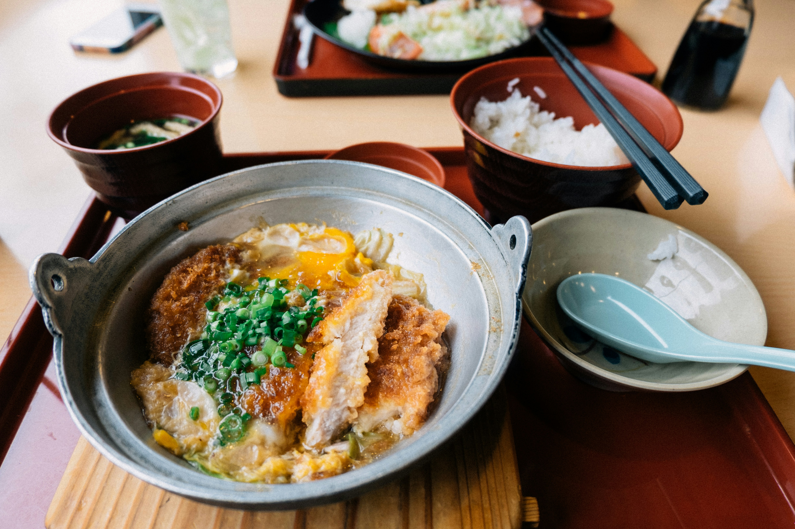

Katsudon

Photo by Tayawee Supan on Unsplash
Description
This dish is a fried pork cutlet breaded with panko, combined with egg over rice. It is a popular Japanese dish, and an excellent comfort food.
Ingredients
- 2 center-cut boneless pork chops, pounded down to a centimeter thick
- salt and pepper
- flour (for dusting)
- 1 egg
- 1 cup panko
- oil (for frying)
- 1/2 cup dashi stock or chicken stock
- 2 teaspoons sugar
- 1 tablespoon soy sauce
- 2 teaspoons Mirin
- 2 large eggs
- 1 medium onion (thinly sliced)
- 2 servings steamed white rice
- 1 scallion (chopped)
Steps
- Use salt and pepper to season the pork chops, and dust with a light coating of flour. Beat the egg in one bowl, and store the panko in another.
- Add a thin layer of oil to a cast iron pan or skillet over medium heat. Coat the pork in the beaten egg, then press the panko evenly into the pork to get a good coating.
- Once the oil is sizzling, carefully lay the pork chops in the oil and cook until golden brown on one side, for 5-6 minutes. Flip and cook the other side for another 5-6 minutes. Drain on a plate lined with a paper towel.
- Next, add the stock, sugar, soy sauce, and mirin to a small bowl to create the stock mixture. Lightly beat the two large eggs in a separate bowl. Add a tablespoon of oil to a pan over medium heat, and add the sliced onion. Fry the onions until they are see through and mildly caramelized.
- Pour the stock mixture over the onions, then slice your tonkatsu (breaded pork chops) into strips and place on top. Drizzle the egg over the dish. Continue to cook over medium low heat until the egg is just set.
- Serve over bowls of steamed rice, and garnish with scallions.
Inspired by Sarah Leung from The Woks of Life
Home